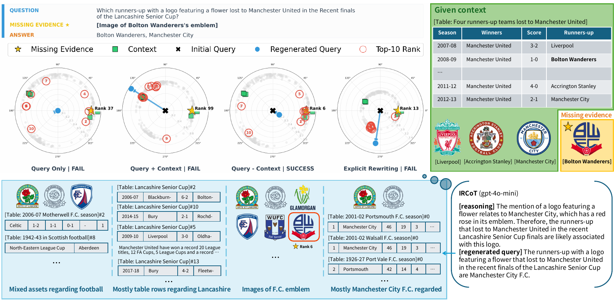
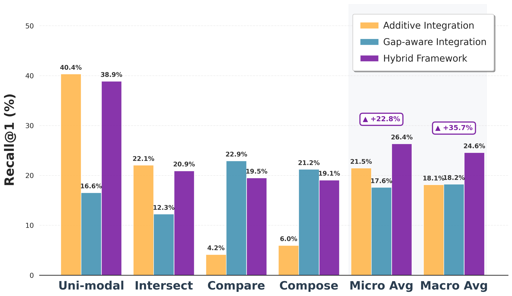

Multimodal multi-hop QA needs evidence spread across text, tables, and images — and the retriever sets the performance ceiling of the whole pipeline.
To gather multi-hop evidence, modern retrievers iteratively regenerate the query by adding the already-retrieved context. But this additive loop has a structural failure we call Semantic Anchoring: the strong semantic gravity of fetched evidence traps the retriever on prominent entities, fetching redundant assets while pushing the true target out of the top-$K$. Explicit LLM query rewriting fares no better — flattening dense visual features into text tokens triggers semantic drift and heavy latency.
GRAIL operates entirely in a unified multimodal embedding space. Given a query $q$ and a partial evidence set $\mathcal{E}_p$, it aggregates the covered knowledge into a context vector $h_\text{ctx}$ via query-weighted attention, then removes the overlapping component from the query with a learnable gap gate $g$:
The refined query $q_\text{gap}$ points toward the unanswered facets of the question. Operating in latent space avoids any linguistic loss, and because every step is differentiable the retrieval signal trains the steering end-to-end. Applied iteratively, it discovers new evidence without accumulating semantic bias.
A two-stage design makes this possible: (1) Unified Semantic Alignment synchronizes text/table/image topologies so cross-modal redundancy can be measured, and (2) the Gap-aware Search Mechanism performs the subtraction above.
Different question types favor different strategies: localized aggregation (Uni-modal, Intersect) benefits from additive reinforcement, while compositional, cross-modal reasoning (Compose, Compare) demands subtractive steering. A lightweight, self-supervised selector routes each query to the right specialist before search.

Macro-averaged recall on the MultimodalQA validation split ($q\text{-type} \in \{\text{Compare, Compose, Intersect}\}$). GRAIL and the hybrid beat both the additive baseline and explicit LLM query regeneration — at a fraction of the latency.
| Method | R@1 | R@5 | R@10 | R@20 | Latency |
|---|---|---|---|---|---|
| Query Only | 16.24 | 32.68 | 40.51 | 48.54 | 2–5 ms |
| Explicit query generation (LLM) | |||||
| Closed-Book | 13.78 | 26.89 | 34.65 | 42.69 | 0.6–1.0 s |
| IRCoT | 13.42 | 24.87 | 30.18 | 36.21 | 1.1–1.6 s |
| Answer-Augmented | 16.54 | 33.24 | 39.96 | 48.86 | 1.2–1.8 s |
| Implicit vector steering | |||||
| Additive | 11.57 | 25.89 | 32.11 | 39.82 | 2–5 ms |
| GRAIL | 17.55 | 33.61 | 40.81 | 47.50 | 3–6 ms |
| Hybrid (ours) | 22.21 | 39.94 | 46.90 | 53.80 | 3–6 ms |
Sequential GRAIL also expands the effective search horizon: under iterative pool construction it surfaces complementary evidence originally ranked around the 30th–35th position into the top-$K$, and stays robust even when the initial pool is entirely noise.
@article{o2026grail,
title = {Subtraction Gets You More: Gap-Aware Retrieval for Multimodal Multi-Hop QA},
author = {O, Sunah and Lee, Jay-Yoon},
journal = {arXiv preprint arXiv:2605.28641},
year = {2026}
}